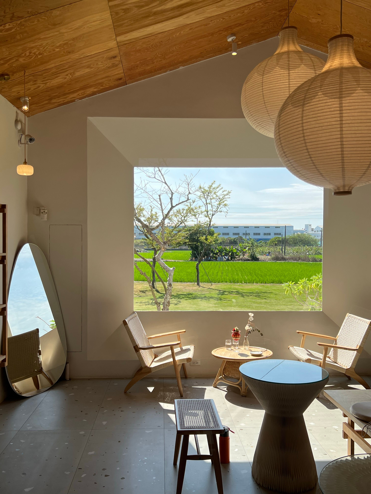
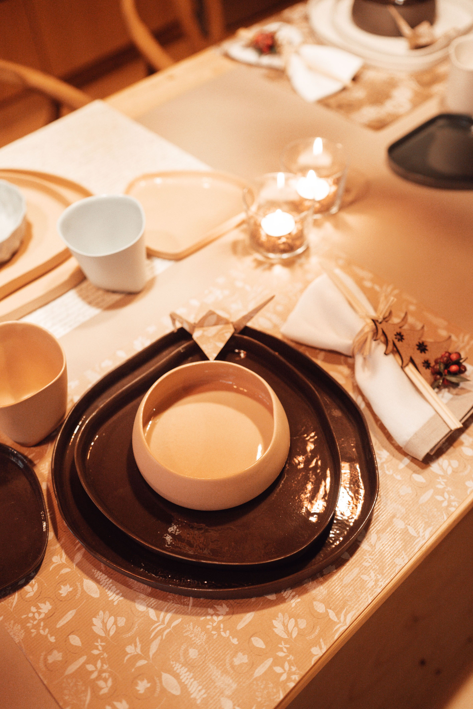
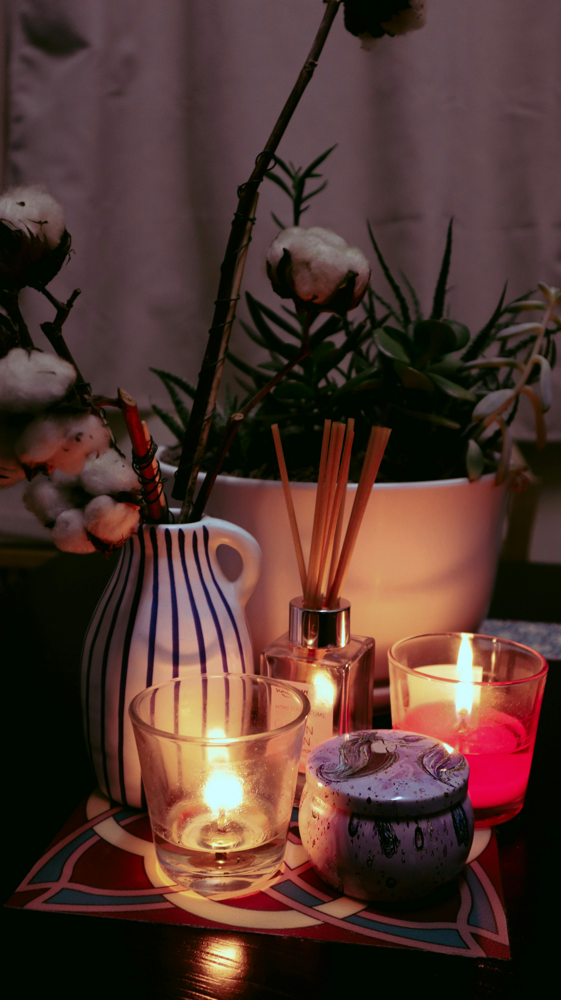
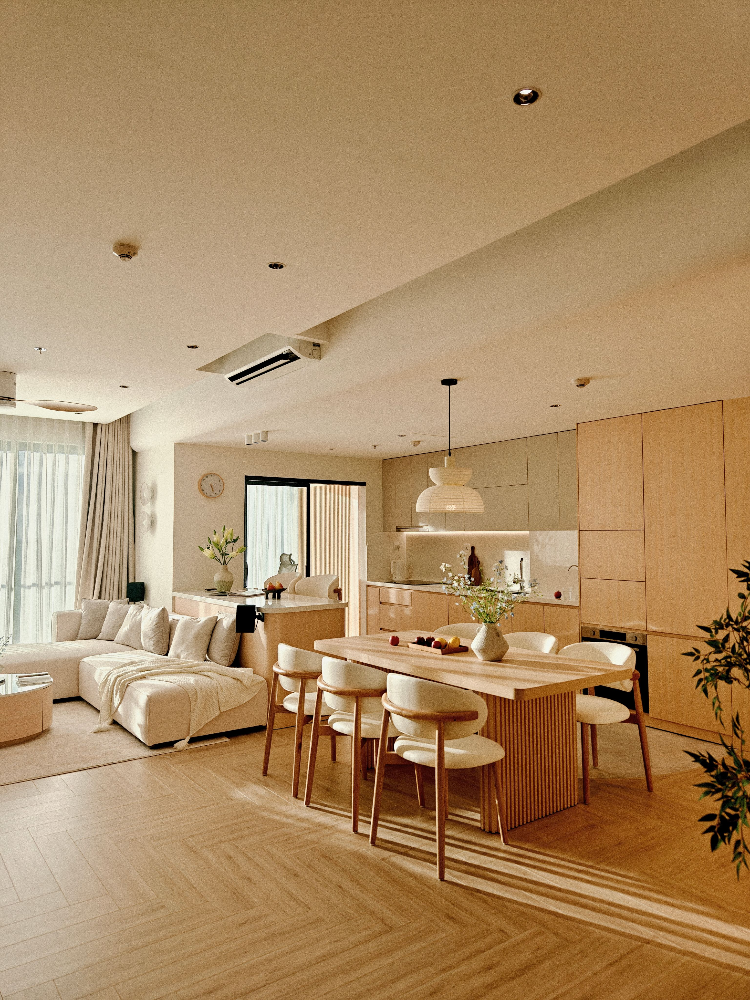
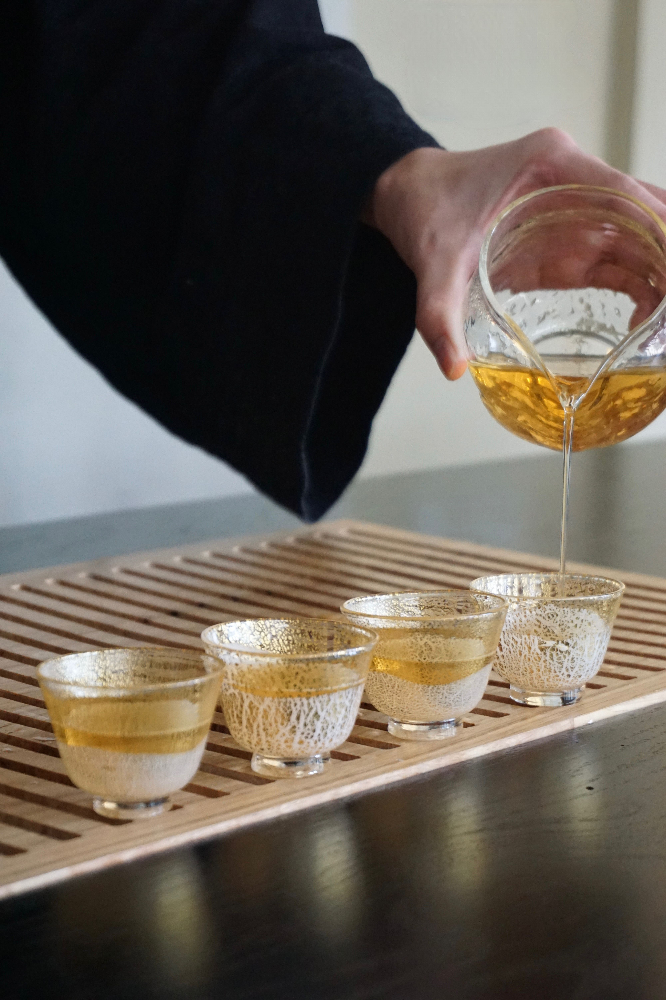
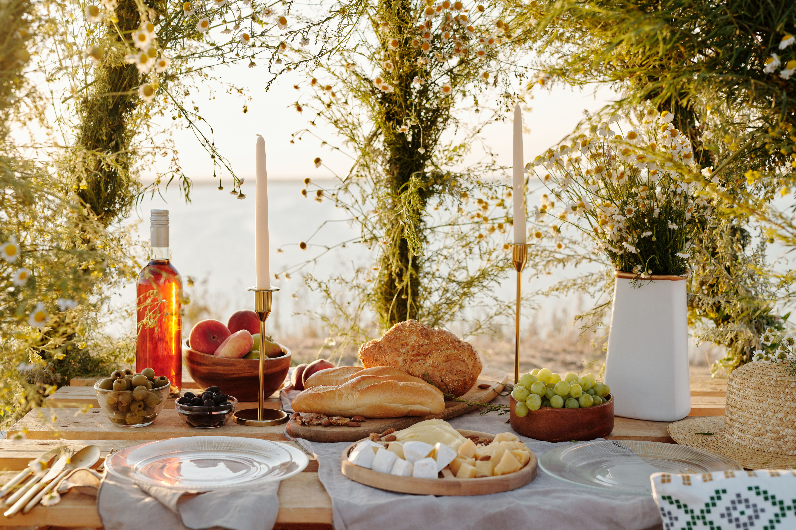

找不到符合條件的選物
試著調整搜尋關鍵字，或瀏覽其他生活提案。

在匆忙的日子裡，留給生活一段空白
器物不只是物件，而是日常溫度的載體。
一只餐碟、一支鋼筆、或是一抹香氛，
這些微小的細節，能讓被忽略的小事重新發光。
不追求繁複，只為了在剛好的時刻，
與最合適的陪伴相遇。

精選商品類別

【書寫之間】留給自己一頁安靜時光
一支筆、一張紙，在緩慢書寫的過程裡，重新整理思緒與日常節奏，讓平凡的日子多一份沉澱。

【食器之美】細節裡的生活品味
從材質、手感到色彩搭配，每一件食器都展現對生活細節的溫柔講究。

【一室微香】讓空間慢慢安靜下來
淡雅的木質與草本香氣，輕輕填滿生活角落，為忙碌的日常保留片刻餘裕。

【日常收納】把喜歡的事物留在視線裡
透過簡潔而實用的收納器具，讓生活回歸秩序，也讓每件物品都有自己的位置。

【一杯之間】為生活預留空白
沖泡一壺茶的時間，是與自己相處的片刻。讓溫潤器皿陪伴每個緩慢而美好的日常。

【四季風景】收藏當下的生活溫度
隨著季節更迭挑選適合的器物與香氣，將自然的節奏融入居家日常，感受時間流動的美好。